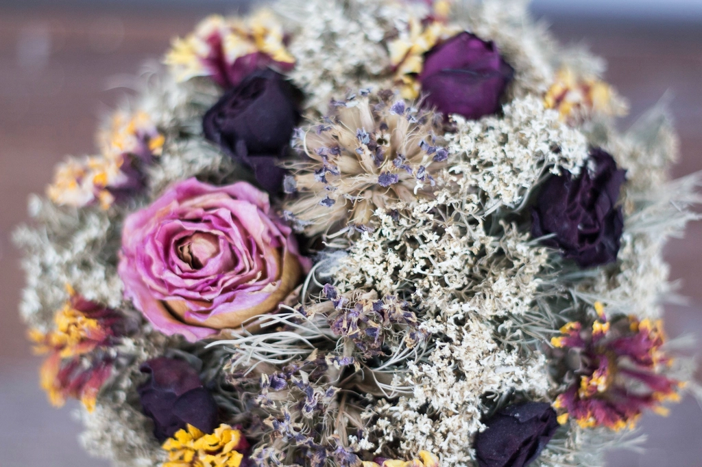
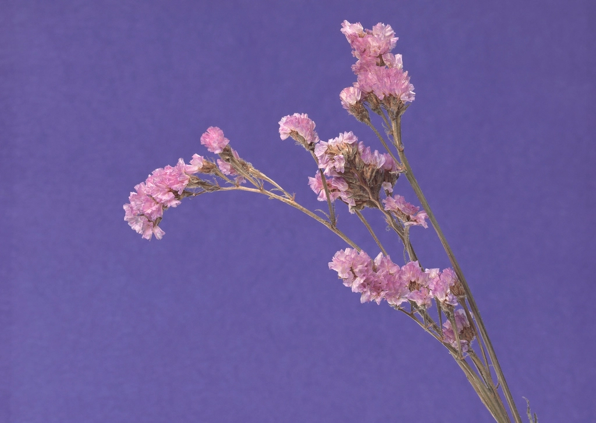
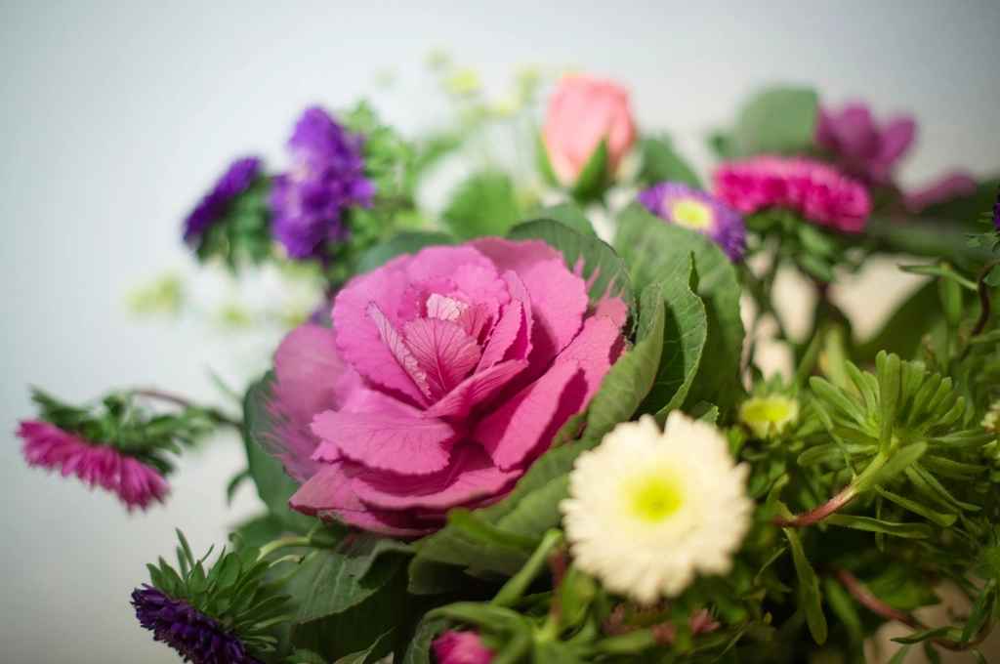

About
サロン紹介
一本の髪に、丁寧を込めて。
セリシールは、滋賀県近江八幡市にあるヘアサロンです。流行を取り入れながらも、お客様ご自身が心地よく過ごせる髪型・髪の状態を一番に考え、一つひとつの工程を丁寧に行うことを心がけています。日々の暮らしに寄り添う、無理のない美しさをご提案いたします。

写真はイメージです(フリー素材を使用)。実店舗の様子とは異なります。
01
カウンセリングを大切にしています
施術前にしっかりとお話を伺う時間を設けています。普段のお手入れ方法やなりたいイメージ、髪のお悩みなど、言葉にしづらいご希望も一緒に整理しながらご提案いたします。

写真はイメージです(フリー素材を使用)。実店舗の様子とは異なります。
02
髪や頭皮へのやさしさを意識して
髪だけでなく、地肌への負担にも配慮した施術を心がけています。お客様の髪質やコンディションに合わせて、無理のない工程をご提案いたします。

写真はイメージです(フリー素材を使用)。実店舗の様子とは異なります。
03
トレンドと上品さの両立
季節感やトレンドを取り入れつつも、派手になりすぎない、上品で長く楽しんでいただけるスタイルをご提案しています。

写真はイメージです(フリー素材を使用)。実店舗の様子とは異なります。
04
居心地のよい空間・時間
落ち着いた内装と静かな時間の流れの中で、日常のあわただしさから離れてゆったりとお過ごしいただけるよう努めています。
スタイリストについて
スタイリスト紹介は準備中です。最新情報はInstagramをご覧ください。